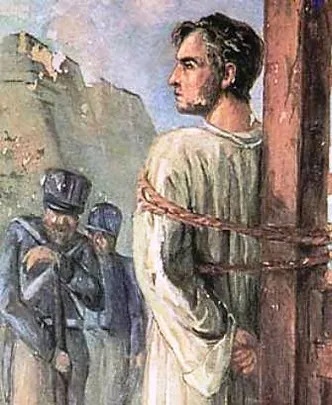

Frei Joaquim do Amor Divino Caneca
 "Com uma pesada corrente de ferro no pescoço o prisioneiro ia andando devagar. Estava descalço, usava uma batina suja e rasgada, vigiado por soldados bem armados. Em direção ao porto, caminhava em silêncio. A Revolução Pernambucana tinha sido esmagada, mas a idéia de libertar a província do poder central estava cada vez mais viva."Frei Joaquim do Amor Divino Caneca nasceu no Recife, no dia 20 de agosto de 1779, recebendo o nome de Joaquim da Silva Rabelo. Filho do português Domingos da Silva Rabelo e Francisca Maria Alexandrina de Siqueira, que moravam em Fora de Portas, próximo do demolido Arco do Bom Jesus. Seu pai era tanoeiro fabricava vasilhames de flandres, daí o apelido de Caneca.
Em 1796, aos 17 anos, tomou o hábito carmelita e aos 22, com licença do Núncio Apostólico de Lisboa ordenou-se padre passando a chamar-se Joaquim do Amor Divino, acrescentando o apelido Caneca, em homenagem a seu pai.
Foi um dos grandes pensadores literários no momento da Independência brasileira. Vivia em Pernambuco quando da inquietação em torno da separação com Portugal e lugar onde a agitação era maior do que no resto do país. Muito combativo, lutava contra o despotismo (o poder absoluto e autoritário) e as relações de dependência que caracterizavam a situação colonial.
Foi professor de retórica e geometria e depois de filosofia racional e moral, em Pernambuco e Alagoas. Em 1817, Frei Caneca iniciou sua ação política com a Revolução Republicana em Pernambuco. Com o fracasso do movimento foi preso e enviado para Salvador, sendo libertado em 1821 pelo movimento constitucionalista de Portugal, regressando então a Pernambuco.
Escreveu, em 1822, “Dissertação sobre o que se deve entender por pátria do cidadão e deveres deste para com a mesma pátria” e, em 1823, “O caçador atirando à arara pernambucana” e as “Cartas de Pítia a Damão”. Redige e publica, também em 1823, o Typhis Pernambucano, jornal de sua propriedade, do qual foi fundador e principal editor. O jornal era semanal e autofinanciado e um veículo usado por Frei Caneca para criticar a situação política do seu tempo e atingir as massas, esclarecendo-as sobre a defesa dos seus direitos.
Em 1824, tornou-se um dos conselheiros da junta de Manuel de Carvalho Paes de Andrade, opinando contra o reconhecimento de Francisco Paes Barreto como presidente de Pernambuco, a favor da invasão de Alagoas e contra o juramento da Constituição outorgada por D. Pedro I. Neste mesmo ano, as províncias do Norte se opõem ao poder imperial formando a Confederação do Equador. Frei Caneca foi um dos seus chefes, e após o seu fracasso, retirou-se para o interior, na companhia de parte das tropas, ocasião em que escreveu o “Intinerário”.
Ainda em 1824, foi preso no Ceará e submetido a julgamento pela Comissão Militar, sendo condenado à morte por enforcamento. A 13 de janeiro de 1825, foi executado no Forte das Cinco Pontas, no Recife. Porém, na ocasião da execução não houve carrasco que se prestasse a enforcá-lo, sendo então fuzilado, ocasião em que demonstrou grande serenidade e coragem. Foi enterrado no Convento do Carmo, no Recife e sua morte foi considerada heróica, cercada de uma auréola de legenda mística pelo povo do Nordeste.